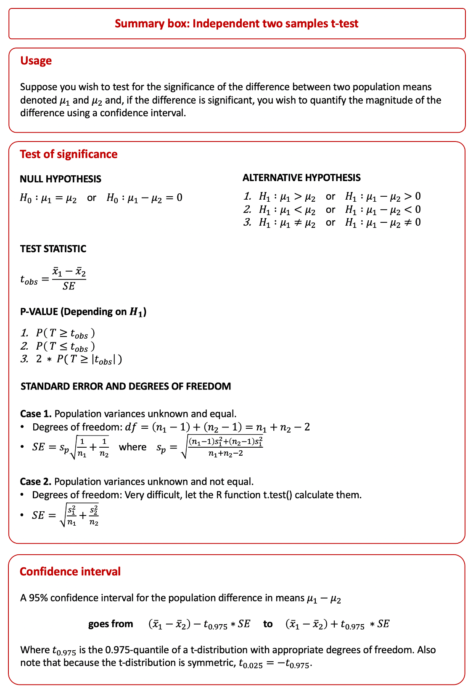
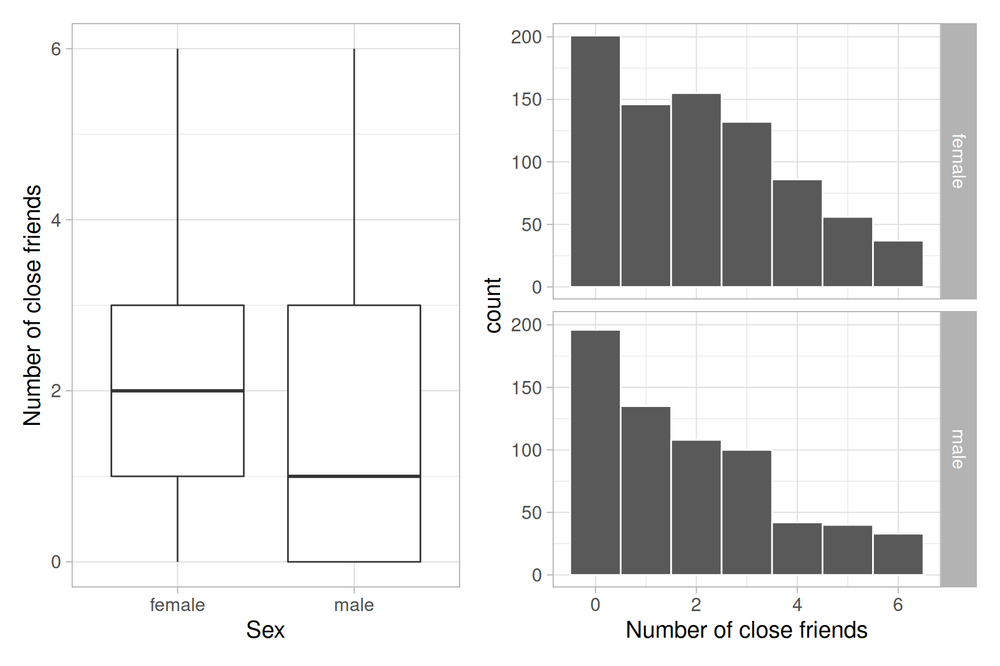
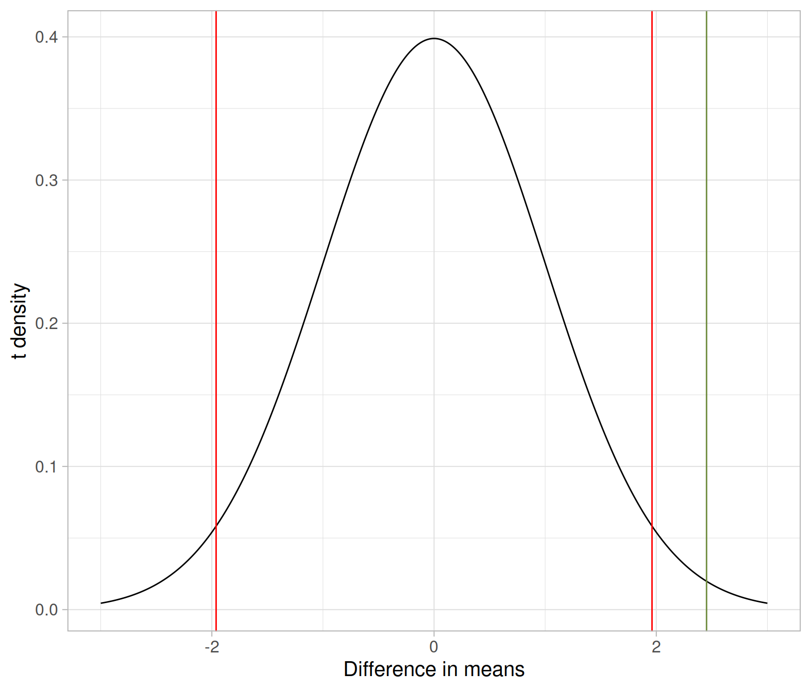

Last week you explored how to draw conclusions about a population mean on the basis of the observed sample t-statistic. In particular, given a random sample of size \(n\) from a population, you tested if the population mean was equal to some hypothesized value.
Let the observed sample mean be \(\bar{x}\). Given that the observed sample mean is \(\bar{x}\), we test whether it is plausible that the population mean \(\mu\) could be equal to some hypothesised value \(\mu_0\) (for example 0).
This is done by comparing the observed \(t\)-statistic
\[ t_{obs} = \frac{\bar{x} - \mu_0}{\frac{s}{\sqrt{n}}} \]
with the appropriate critical value from a t distribution with df degrees of freedom.
For an \(\alpha = 0.05\), if the alternative hypothesis \(H_1\) is one-sided we have two cases:
qt(p = 0.95, df = n - 1)qt(p = 0.05, df = n - 1)If the alternative hypothesis \(H_1\) is two-sided:
qt(p = c(0.025, 0.975), df = n - 1)We reject the null hypothesis if the observed \(t\)-statistic is as extreme or more extreme than the critical value. Remember, more extreme is calculated in the direction specified by the alternative hypothesis!
The above procedure applies when testing a single parameter (a proportion or a mean) from a single population.
Today you will explore and apply inference procedures for comparing parameters between two populations or treatment groups.

You will now use a subset of data from the General Social Survey (GSS) conducted in the US in 2004. One of the questions asked to a random sample of adult Americans in the 2004 General Social Survey was:
“From time to time, most people discuss important matters with other people. Looking back over the last six months — who are the people with whom you discussed matters important to you? Just tell me their first names or initials.”
The interviewer task was to record how many names were mentioned by each survey participant, along with the participant’s sex. For more details, see the GSS webpage.
You will explore whether men and women differ with regard to the number of names they tend to mention when answering this question. For simplicity, we will refer to the people with whom you talk about important personal matters as “close friends.”
The survey data are stored in the file CloseFriends.csv which can be downloaded from this address: https://uoepsy.github.io/data/CloseFriends.csv
Note: This survey was conducted in the US in the year 2004, at which point US officials recorded sex as “female” or “male.” We are merely analysing the data that were collected in that survey as it is an extensive and open-source dataset. The fact that we are using this data to demonstrate a statistical method to compare two group means is not an endorsement to the view that gender is a binary variable.
Before testing for a potential difference in the mean of a quantitative variable between two independent groups, it is good practice to display, explore and summarise the data.
We will now load the data into R and inspect it, paying particular attention to:
Load the data:
library(tidyverse)
gss <- read_csv('https://uoepsy.github.io/data/CloseFriends.csv')Inspect the names of the variables and the first six rows:
head(gss)## # A tibble: 6 x 2
## sex num_close_friends
## <chr> <dbl>
## 1 female 0
## 2 female 0
## 3 female 0
## 4 female 0
## 5 female 0
## 6 female 0Check the number of observational units and variables:
dim(gss)## [1] 1467 2The tibble says that sex is of class chr (character). As sex is a categorical variable, we will encode it as a factor:
gss <- gss %>%
mutate(sex = factor(sex))
# check encoding
head(gss)## # A tibble: 6 x 2
## sex num_close_friends
## <fct> <dbl>
## 1 female 0
## 2 female 0
## 3 female 0
## 4 female 0
## 5 female 0
## 6 female 0The observational units are the 1,467 sampled adult Americans taking part in the 2004 General Social Survey (GSS).
The recorded variables are the sex of the participant and the number of names given by the participant. The former is categorical, while the latter is a numerical value that varies from participant to participant.
We are interested in how the number of mentioned names tends to vary with the sex of the participant. For this reason, sex is the explanatory variable, while number of close friends in the response variable.
This study only involved random sampling of the observational units from the population of adult Americans in 2004. This is an observational study as the researchers limited themselves to record the values that naturally occur. The researchers did not perform any manipulation of the variables, such as random assignment of observational units to groups. If this were the case, we would be analysing data from a randomised experiment.
We will now state, in words, the null and alternative hypotheses to test whether the sample data provide evidence that American males and females tend to differ with regard to the average number of close friends they mention.
The null hypothesis is that the population mean number of close friends is the same for adult American males as for females. In other words, the null hypothesis states that there is no difference in the population mean number of close friends between males and females.
The alternative hypothesis is that the population mean number of close friends is not the same for males as for females. In other words, the alternative hypothesis states that there is a difference in the population mean number of close friends between males and females.
To formally write out the null and alternative hypothesis, we need to define the parameters of interest in this study, and identify appropriate symbols for them:
We can now formally state the null and alternative hypotheses using symbols: \[ H_0 : \mu_f = \mu_m \\ H_1 : \mu_f \neq \mu_m \] or, equivalently: \[ H_0 : \mu_f - \mu_m = 0 \\ H_1 : \mu_f - \mu_m \neq 0 \]
The one-sample \(t\)-test introduced last week tests if the population that the observed sample came from has a hypothesized mean. Here, instead, we want to compare the means of two populations (or, if it were a randomized experiment, between two treatment groups). Hence, in this application we need to use a two independent samples t-test.
We start by looking at descriptive summaries by sex:
descr_stats <- gss %>%
group_by(sex) %>%
summarise(
SampleSize = n(),
Mean = mean(num_close_friends),
SD = sd(num_close_friends),
Minimum = min(num_close_friends),
LowerQuartile = quantile(num_close_friends, p = 0.25),
Median = median(num_close_friends),
UpperQuartile = quantile(num_close_friends, p = 0.75),
Maximum = max(num_close_friends)
)
descr_stats## # A tibble: 2 x 9
## sex SampleSize Mean SD Minimum LowerQuartile Median UpperQuartile
## <fct> <int> <dbl> <dbl> <dbl> <dbl> <dbl> <dbl>
## 1 female 813 2.09 1.76 0 1 2 3
## 2 male 654 1.86 1.78 0 0 1 3
## # … with 1 more variable: Maximum <dbl>To format the above tibble as a nice HTML table, you can use the function kable from the package kableExtra:
library(kableExtra)
kable(descr_stats, digits = 2) %>%
kable_styling(full_width = FALSE)| sex | SampleSize | Mean | SD | Minimum | LowerQuartile | Median | UpperQuartile | Maximum |
|---|---|---|---|---|---|---|---|---|
| female | 813 | 2.09 | 1.76 | 0 | 1 | 2 | 3 | 6 |
| male | 654 | 1.86 | 1.78 | 0 | 0 | 1 | 3 | 6 |
The values in the above table are statistics. They are numerical summaries computed on observational units which represent a random sample from the population of adult Americans in 2004.
We can now visualise the distribution of the number of close friends by sex either via a boxplot or histogram:
library(patchwork)
plt1 <- ggplot(gss, aes(x = sex, y = num_close_friends)) +
geom_boxplot() +
labs(x = 'Sex', y = 'Number of close friends')
plt2 <- ggplot(gss, aes(x = num_close_friends)) +
geom_histogram(binwidth = 1, color = 'white') +
facet_grid(sex ~ .) +
labs(x = 'Number of close friends')
plt1 | plt2
The distribution of number of close friends for both males and females appears to be skewed to the right. The variability in the number of close friends seems to be similar across males and females. The sample mean number of close friends seems to be slightly higher for females than males.
The sample mean number of close friends for females is \(\bar{x}_f\) = 2.09, with standard deviation \(s_f\) = 1.76 friends.
For males, the sample mean number of close friends is \(\bar{x}_m\) = 1.86, with standard deviation \(s_m\) = 1.78 friends.
The difference in sample means is \(\bar{x}_f - \bar{x}_m\) = 0.23.
Due to sampling variability, we can not conclude that, because the sample means differ, the means of the two populations must differ too.
We must resort to a principled framework to test this, and we have already learned to use statistical hypothesis testing in order to assess if sample results (in our case, the observed difference in sample mean number of close friends) are significant in the sense of being unlikely to have occurred by chance (from random sampling) alone.
We can perform a t-test either (a) by hand or (b) using built-in functions that automate all the computations. However, (a) is important to understand how the t-test works, so we will check (a) before showing the faster and completely equivalent way in (b).
We can use the table of summary statistics to calculate the value of the \(t\)-statistic.
Let’s extract the relevant statistics from the table of descriptive summaries:
n_f <- filter(descr_stats, sex == 'female') %>% pull(SampleSize)
n_m <- filter(descr_stats, sex == 'male') %>% pull(SampleSize)
xbar_f <- filter(descr_stats, sex == 'female') %>% pull(Mean)
xbar_m <- filter(descr_stats, sex == 'male') %>% pull(Mean)
s_f <- filter(descr_stats, sex == 'female') %>% pull(SD)
s_m <- filter(descr_stats, sex == 'male') %>% pull(SD)Step 1. Can the population variances be assumed equal? Test the following hypotheses:
\[ H_0 : \sigma_f^2 = \sigma_m^2 \\ H_1 : \sigma_f^2 \neq \sigma_m^2 \]
or, equivalently: \[ H_0 : \frac{\sigma_f^2}{\sigma_m^2} = 1 \\ H_1 : \frac{\sigma_f^2}{\sigma_m^2} \neq 1 \]
Use the F-test to test for equality of the population variances:
var.test(num_close_friends ~ sex, data = gss)##
## F test to compare two variances
##
## data: num_close_friends by sex
## F = 0.98094, num df = 812, denom df = 653, p-value = 0.7937
## alternative hypothesis: true ratio of variances is not equal to 1
## 95 percent confidence interval:
## 0.847352 1.134264
## sample estimates:
## ratio of variances
## 0.9809412At a significance level of 0.05, the \(p\)-value = 0.79 leads us to not reject the null hypothesis of equal variances across the two populations.
Step 2. We can now perform the \(t\)-test calculations using the appropriate formula for the standard error of the difference in means. As the population variances are assumed equal, we use the formula involving the pooled standard deviation:
# Pooled SD
s_p <- sqrt(
((n_f - 1) * s_f^2 + (n_m - 1) * s_m^2) / (n_f + n_m - 2)
)
SE <- s_p * sqrt(1/n_f + 1/n_m)
t_obs <- (xbar_f - xbar_m) / SE
t_obs## [1] 2.4523We reach to a conclusion about our hypothesis test either via the
critical value approach: Compare the \(t\)-statistic with the appropriate 5% critical value from a \(t\)-distribution.
p-value approach: Compare the \(p\)-value with the significance level \(\alpha = 0.05\).
Critical value approach
upper_crit <- qt(p = 0.975, df = n_f + n_m - 2)
upper_crit## [1] 1.961585lower_crit <- qt(p = 0.025, df = n_f + n_m - 2)
lower_crit## [1] -1.961585As you can see, the t-distribution is symmetric. The value that cuts an area of 0.025 to its left, \(t_{0.025} = -1.961585\) is equal to minus the value that cuts an area of 0.025 to its right, \(t_{0.975} = 1.961585\) \[ t_{0.025} = - t_{0.975} \] so we will simply denote the lower critical value as \(-t_{0.975}\) and the upper critical value as \(t_{0.975}\). That is, in a t-distribution with 1465 degrees of freedom, 95% of the values lie between \(-t_{0.975}\) and \(t_{0.975}\), that is \(-1.96158\) and \(1.961585\).
Is the observed t-statistic more extreme than the critical values?
t_obs <= lower_crit # or: t_obs <= -upper_crit see discussion above!## [1] FALSEt_obs >= upper_crit## [1] TRUEThe observed t-statistic 2.45 is larger than the upper critical value 1.96. Hence, at the 5% significance level we have sufficient evidence against the null hypothesis that males and females have the same number of close friends.
\(p\)-value approach
p_value <- 2 * (1 - pt(t_obs, df = n_f + n_m - 2))
p_value## [1] 0.01431058At a 5% significance level, the observed difference in mean number of close friends between adult American females and males is significantly different from 0 (\(t(1465) = 2.45\), \(p = 0.01\), two-tailed).
In other words, an observed difference in sample mean number of close friends of 0.23 is highly unlikely to occur by chance alone.
The sample data provide very strong evidence that, on average, adult American females and males tend to not have the same number of close friends.
If you want to visualise where the observed t-statistic lies on the t-distribution, as well as the critical values (in red), you can use the following code:
plot_x <- seq(-3, 3, by = 0.01)
plot_y <- dt(plot_x, df = n_f + n_m - 2)
plot_df <- tibble(plot_x, plot_y)
plot_df## # A tibble: 601 x 2
## plot_x plot_y
## <dbl> <dbl>
## 1 -3 0.00448
## 2 -2.99 0.00461
## 3 -2.98 0.00475
## 4 -2.97 0.00490
## 5 -2.96 0.00504
## 6 -2.95 0.00519
## 7 -2.94 0.00535
## 8 -2.93 0.00551
## 9 -2.92 0.00567
## 10 -2.91 0.00584
## # … with 591 more rowsggplot(plot_df, aes(x = plot_x, y = plot_y))+
geom_line() +
geom_vline(xintercept = t_obs, color = 'darkolivegreen4') +
geom_vline(xintercept = c(lower_crit, upper_crit), color = 'red') +
labs(x = 'Difference in means', y = 't density')
In R, we can also perform a two-sample \(t\)-test very quickly using the function t.test. This is the same function you saw to perform a one-sample mean test.
Before applying it though, we need to check with var.test whether to assume the population variances to be different or equal.
goal( y ~ x )
where
y is the response variablex is the explanatory variable
Step 1. Test for equality of the population variances. This is important so that later we know whether to set var = TRUE or var = FALSE in the function t.test():
var.test(num_close_friends ~ sex, data = gss)Step 2. According to the previous test, use the appropriate \(t\)-test using either one of the following code chunks.
t.test(num_close_friends ~ sex, data = gss, var.equal = TRUE)# Welch-Satterthwaite approximation
t.test(num_close_friends ~ sex, data = gss, var.equal = FALSE)
# If not provided, var.equal = FALSE by default
t.test(num_close_friends ~ sex, data = gss)We have already tested before for equality of the population variances:
var.test(num_close_friends ~ sex, data = gss)##
## F test to compare two variances
##
## data: num_close_friends by sex
## F = 0.98094, num df = 812, denom df = 653, p-value = 0.7937
## alternative hypothesis: true ratio of variances is not equal to 1
## 95 percent confidence interval:
## 0.847352 1.134264
## sample estimates:
## ratio of variances
## 0.9809412As we cannot reject the null hypothesis of equal variances across the two populations, we use a \(t\)-test with \(\textrm{df} = n_1 + n_2 - 2\), i.e. we set var.equal = TRUE:
t.test(num_close_friends ~ sex, data = gss, var.equal = TRUE)##
## Two Sample t-test
##
## data: num_close_friends by sex
## t = 2.4523, df = 1465, p-value = 0.01431
## alternative hypothesis: true difference in means between group female and group male is not equal to 0
## 95 percent confidence interval:
## 0.04556467 0.40984457
## sample estimates:
## mean in group female mean in group male
## 2.088561 1.860856The independent sample t-test has the following assumptions:
Let’s check them:
Hence, the conditions required for the two-sample \(t\)-test results to be valid are satisfied.
Now that we have established that there is significant evidence of a difference in the population mean number of close friends between females and males, how much do they actually differ??? In other words, what is the magnitude of this difference in the population means?
We can construct and interpret a 95% confidence interval for the difference in population mean number of close friends between females and males. We also need to pay particular attention on whether the interval is negative, positive, or contains zero.
In order to estimate the magnitude of the difference in the population means we can use a confidence interval for the difference in means:
ci <- tibble(
Lower = (xbar_f - xbar_m) - upper_crit * SE,
Upper = (xbar_f - xbar_m) + upper_crit * SE)
ci## # A tibble: 1 x 2
## Lower Upper
## <dbl> <dbl>
## 1 0.0456 0.410Note that the same result is given by the t.test() function in these lines of the output
## 95 percent confidence interval:
## 0.04556467 0.40984457A 95% confidence interval for the difference in the mean number of close friends between females and males is [0.046, 0.41].
The confidence interval is entirely positive, supporting our conclusion that females and males tend to differ with regard to the average number of close friends.
We are 95% confident that American females have between 0.046 and 0.41 more close friends, on average, than American males do.
Causation: Do the data provide evidence that how many close friends one has is caused by ones’ sex?
No, we can not conclude that the person’s sex was responsible for the number of close friends. This data was collected as part of an observational study, hence the explanatory variable sex was simply observed in the observational units.
Generalisation: To which population can the results of this study be applied to?
Because the observational units are a random sample from the population of adult Americans in year 2004, we might apply our results to adult American men and women in that year.
We might hesitate in generalising the results to all Americans and to a different year, as younger people were not included in the survey, and because the trend could have changed over time.
Think about it
The published experiment
Researchers Garrity and Degelman (1990) investigated the effect of a server introducing themself by name on restaurant tipping. The study involved forty, 2-person parties eating a $23.21 fixed-price buffet Sunday brunch at Charley Brown’s Restaurant in Huntington Beach, California, on April 10 and 17, 1988. Each two-person party was randomly assigned by the server to either a name or a no name introduction condition using a random mechanism. The server kept track of the two-person party condition and how much the party tipped at the end of the meal.
The published data
The paper provides very limited information about the data, i.e. only summary statistics and not the individual measurements. For this reason, you won’t be able to use the t.test() function, which requires the actual data. You will have to compute the t-statistic using the formulas.
The sample mean tip for the 20 parties in the name condition was \(\bar x_{name}= \$5.44\), with a standard deviation \(s_{name} = \$1.75\).
For the 20 parties in the no name condition, the sample mean tip was \(\bar x_{no\ name}= \$3.49\), with a standard deviation \(s_{no\ name} = \$1.13\).
Identify the observational units in this study.
Is this an observational study or a randomized experiment? Explain why.
What are the explanatory and response variables in this study?
Classify them as either categorical (also binary) or quantitative.
State, in words and in symbols, the server’s null and alternative hypotheses.
Comment on what a Type I error and a Type II error would mean in this particular study.
Would you consider one of these two errors to be more worrying than the other? Explain why.
Assuming that the population variances are not equal, calculate the test statistic and the \(p\)-value. Note that this requires using the Welch t-test.
For your convenience, we have already calculated the degrees of freedom, which are \(\textrm{df} =\) 32.5.
Hint: As you do not have the party-by-party tipping amounts, but only summary statistics, you can not use the t.test() function, which requires the data at the finest level (the observational units).
At the significance level \(\alpha = 0.05\), what would you conclude?
The paper only reports the sample mean tips and standard deviations for the name and no name conditions.
Does the paper provide enough information to check whether the validity conditions of the two-sample t-test are satisfied?
If yes, check that the conditions are met. If not, explain which additional information you would need.
Calculate a 95% confidence interval for the difference in population mean tipping amount between the name and no name conditions.
Write a sentence or two interpreting what the interval reveals.
Hint: The degrees of freedom were given in Question 6.
Regardless of whether the validity conditions of the t-test are met, summarise your conclusions from this test.
Make sure to also comment on causation and generalisability of your results.